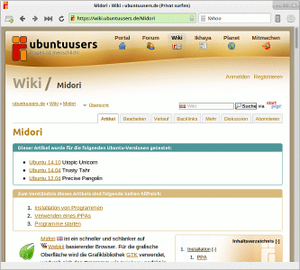
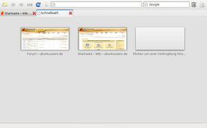
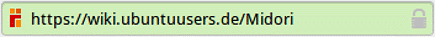

Midori
Dieser Artikel wurde für die folgenden Ubuntu-Versionen getestet:
Ubuntu 16.04 Xenial Xerus
Ubuntu 14.04 Trusty Tahr
Zum Verständnis dieses Artikels sind folgende Seiten hilfreich:
Midori  ist ein schneller und schlanker auf WebKit basierender Browser. Für die grafische Oberfläche wird die Grafikbibliothek GTK verwendet, wodurch sich das Programm wie Epiphany perfekt in GNOME und zusätzlich auch in Xfce oder LXDE integriert. Mit QupZilla gibt es einen Browser auf Qt-Basis, der optisch besser zu KDE passt.
ist ein schneller und schlanker auf WebKit basierender Browser. Für die grafische Oberfläche wird die Grafikbibliothek GTK verwendet, wodurch sich das Programm wie Epiphany perfekt in GNOME und zusätzlich auch in Xfce oder LXDE integriert. Mit QupZilla gibt es einen Browser auf Qt-Basis, der optisch besser zu KDE passt.
Besonders deutlich wird der Geschwindigkeitsvorteil im Vergleich zu Gecko-basierenden Browsern wie Firefox bei Webseiten mit intensiver JavaScript-Nutzung und anderen Web-2.0-Funktionen. Midori bietet unter anderem folgende Funktionen:

Mausgesten
Privater Modus
Schnellwahl-Funktion (Speed-Dial)
Unterstützung für Netscape- bzw. Mozilla-Plugins
Reiter, Fenster und Sitzungsverwaltung
Lesezeichenverwaltung
Anpassbare und erweiterbare Oberfläche
Da Midori ein junges Projekt ist, befindet es sich noch in Entwicklung. Für den Dauereinsatz als vollwertiger Ersatzbrowser ist Midori – abhängig von den persönlichen Ansprüchen – unter Umständen noch nicht geeignet. Erwähnenswert ist aber der im Vergleich mit anderen Browsern relativ geringe Ressourcen-Bedarf.
Installation¶
 Midori ist in den offiziellen Paketquellen enthalten. Eine Installation aus dieser Quelle sollte aufgrund veralteter Pakete erst ab Ubuntu 16.04 erfolgen. Folgendes Paket muss installiert [1] werden:
Midori ist in den offiziellen Paketquellen enthalten. Eine Installation aus dieser Quelle sollte aufgrund veralteter Pakete erst ab Ubuntu 16.04 erfolgen. Folgendes Paket muss installiert [1] werden:
midori (universe)
 mit apturl
mit apturl
Paketliste zum Kopieren:
sudo apt-get install midori
sudo aptitude install midori
PPA¶
Aktuelle Programmversionen lassen sich bis einschließlich Ubuntu 15.10 durch die Einbindung eines "Personal Package Archiv" (PPA) [2] nutzen. Bei der Installation aus dem PPA werden Abhängigkeiten von WebKit über Pakete aus den offiziellen Paketquellen aufgelöst.
Adresszeile zum Hinzufügen des PPAs:
ppa:midori/ppa
Hinweis!
Zusätzliche Fremdquellen können das System gefährden.
Ein PPA unterstützt nicht zwangsläufig alle Ubuntu-Versionen. Weitere Informationen sind der  PPA-Beschreibung des Eigentümers/Teams midori zu entnehmen.
PPA-Beschreibung des Eigentümers/Teams midori zu entnehmen.
Damit Pakete aus dem PPA genutzt werden können, müssen die Paketquellen neu eingelesen werden.
Nach dem Aktualisieren der Paketquellen erfolgt die Installation wie oben angegeben.
Benutzung¶
Nach der Installation kann das Programm bei Ubuntu-Varianten mit einem Anwendungsmenü über "Internet -> Midori" gestartet werden [3]. Ansonsten nutzt man den Befehl midori.
Midori bietet bei der Nutzung keine Überraschungen, das Menükonzept ähnelt dem von Firefox. In jüngerer Zeit orientiert man sich am allgemeinen Trend, mehr Platz für die anzuzeigende Webseite zu schaffen. Falls die Menüleiste ausgeblendet ist, führt man einen Rechtsklick  auf ein beliebiges Symbol der Navigationsleiste aus und aktiviert sie wieder. Die Taste
F9 öffnet eine Seitenleiste für
auf ein beliebiges Symbol der Navigationsleiste aus und aktiviert sie wieder. Die Taste
F9 öffnet eine Seitenleiste für
Lesezeichen
Verlauf
Übertragungen (Downloads) und
Nachrichtenquellen (RSS Feeds)
Auch eine Schnellwahl wie in Opera ist vorhanden. Eventuell nützlich sind diverse Startoptionen, die man sich mit:
midori --help-execute
anzeigen lassen kann. Beispiel:
midori -e Fullscreen
Integrierte Erweiterungen¶
Bisher sind folgende Erweiterungen intern vorhanden und können je nach Bedarf über "Bearbeiten -> Einstellungen -> Erweiterungen" aktiviert werden (Stand: Juni 2014, Midori 0.5.8):
|  |
| Schnellwahl-Funktion |
Adressen aller Reiter kopieren
Benutzererweiterungen (Benutzerskripte und -stile)
Cookie-Verwaltung
DevPet (für Entwickler)
Unterstützung von Download-Managern:
Befehlszeile (benutzerdefiniert)
Farbige Reiter
Formularvervollständigung
Funktionen in der Statusleiste
Mausgesten (Anleitung
)Nachrichtenquellenleiste (RSS-Feeds)
NoJS (Verwendung von JavaScript für einzelne Webseite konfigurieren)
Notizen
nur Symbole in Reitern anzeigen
Reiterleiste
Tastaturkürzel
Uhr in der Statusleiste
Verlaufsgestützte (Reiter-)Liste
Werbeblocker (mittels Filterliste)
Werkzeugleisteneditor (Anleitung)
Manche Erweiterungen können – insbesondere bei der Installation aus den offiziellen Paketquellen – fehlen.
Konfiguration¶
Suchmaschinen¶
Von Haus aus sind nur englischsprachige Suchmaschinen in Midori vorhanden, die sich mit der Eingabe eines Kürzels in der Adresszeile
Kürzel Suchbegriff [weitere Suchbegriffe...]
oder über das Suchfeld rechts oben ansteuern lassen. Die vorkonfigurierten Suchmaschinen sind:
| Kürzel | URL | Suchmaschine |
| g | http://www.google.com/search?q=%s | Google |
| wp | http://en.wikipedia.org/wiki/Special:Search/%s | Wikipedia |
| fd | http://www.thefreedictionary.com/%s | The Free Dictionary |
Bei Bedarf lassen sich weitere hinzufügen, in dem man über "Extras -> Suchmaschinen verwalten -> Hinzufügen" einen neuen Eintrag anlegt oder die Datei ~/.config/midori/search manuell bearbeitet. Beispiele:
| Kürzel | URL | Suchmaschine |
| wpde | http://de.wikipedia.org/wiki/Special:Search/%s | Wikipedia |
| leo | http://dict.leo.org/?lp=ende&lang=de&search=%s | dict.leo.org  (Englisch-Deutsch) (Englisch-Deutsch) |
Um weitere Suchmaschinen hinzuzufügen, muss man zuerst die richtige URL herausbekommen. Dazu ruft man am einfachsten die gewünschte Suchmaschine auf und startet eine Suche mit einem beliebigen Suchbegriff. Die mit dem Ergebnis angezeigte Adresse wird nun als Befehl für die neue einzurichtende Suchmaschine benutzt, wobei man den Suchbegriff einfach durch %s ersetzt. Eine umfangreiche Liste mit weiteren Suchmaschinen-Adressen ist im Artikel Epiphany zu finden.
Inhaltsfilter¶
Hinweis:
Aufgrund einer Einschränkung des zugrunde liegenden WebKit greifen Inhaltsfilter prinzipiell erst nachträglich — wenn die komplette Webseite geladen ist. Dadurch werden auch die eigentlich zu blockierenden Elemente heruntergeladen und erst hinterher ausgeblendet. Abhilfe schafft die Verwendung eines Proxys.
Benutzerskripte¶
Benutzerskripte werden eingesetzt, um das Aussehen von Webseiten (nachträglich) zu beeinflussen. Ein bekanntes Beispiel ist die Firefox-Erweiterung Greasemonkey . Eine umfangreiche Sammlung dieser Skripte ist auf Userscripts.org zu finden. Allerdings muss beachtet werden, dass diese Skripte für den Einsatz unter Midori auch mit WebKit kompatibel sein müssen. Dies trifft z.B. auf Anweisungen wie @include und @exclude zu, während Elemente wie @require und @resource nicht kompatibel sind. Während viele Skripte sofort einsatzfähig sind, erfordern andere mehr oder weniger viele Korrekturen.
Benutzerskripte werden generell unter ~/.local/share/midori/scripts/ gespeichert. Der Dateiname ist beliebig, aber die Endung muss auf .user.js lauten. Die Verwendung von Benutzerskripten wird unter "Bearbeiten -> Einstellungen -> Erweiterung -> Benutzererweiterungen" aktiviert.
Um z.B. Flash-Elemente in Webseiten zu blockieren, kann FlashBlock2 genutzt werden. Man kopiert sich den Quellcode und speichert ihn in die Datei ~/.local/share/midori/scripts/blockflash2.user.js. Anschließend lässt man sich mit "Ansicht -> Seitenleiste" oder
F9 die Option "Benutzerskripte" anzeigen. An dieser Stelle lassen sich eigene Skripte je nach Bedarf de- bzw. aktivieren oder entfernen. Dies gilt auch für die im folgenden beschriebenen Benutzerstile.
Nun werden Flash-Elemente nicht mehr automatisch abgespielt, sondern durch den Hinweis [Play Flash] ersetzt. Bei Bedarf lassen sich so ausgeblendete Elemente durch Linksklick ( ) wieder anzeigen. Der angezeigte Text (und die Farbe) kann im Skript angepasst werden.
) wieder anzeigen. Der angezeigte Text (und die Farbe) kann im Skript angepasst werden.
Ein weiteres empfehlenswertes Benutzerskript in diesem Zusammenhang ist AdSweep , sofern man bereits einen allgemeinen Werbeblocker einsetzt.
Benutzerstile¶
Der Unterschied zwischen Benutzerskripten und Benutzerstilen liegt praktisch nur in der unterschiedlichen Syntax des Quellcodes. Benutzerstile sind nichts anderes als Cascading Style Sheets und werden im Ordner ~/.local/share/midori/styles/ gespeichert. Der Dateiname ist beliebig, aber die Endung sollte .css lauten.
Als Beispiel für einen eigenen Benutzerstil soll hier Ad Blocking FiltersetP dienen. Über die Schaltfläche "Show code" auf der Webseite kann man sich den erforderlichen Inhalt erzeugen lassen. Dieser wird kopiert und in eine neue Datei ~/.local/share/midori/styles/Ad Blocking FiltersetP.css eingefügt und abgespeichert. Die Einbindung in Midori erfolgt wie unter Benutzerskripte beschrieben.
Ein weiteres Beispiel: Der folgende Code dient dazu, die URL unter dem Mauszeiger in der linken unteren Fensterecke halbtransparent einzublenden (vorher Statusleiste ausblenden).
1 2 3 4 5 6 7 8 9 10 11 12 13 14 | a[href]:hover { text-decoration: none !important; } a[href]:hover:after { content: attr(href); position: fixed; left: 4px; bottom: 4px; padding: 0 6px !important; max-width: 95%; overflow: hidden; white-space: nowrap; text-overflow: ellipsis; font:10pt sans-serif !important; text-shadow: 0 0 12px white; background-color: ButtonFace !important; color: ButtonText !important; opacity: 0.8; outline: ButtonFace solid thick; z-index: 9999; } |
Der Dateiname könnte z.B. ~/.local/share/midori/styles/url_hover.css lauten.
Problembehebung¶
Allgemein¶
Wenn auf Internetseiten Darstellungsfehler auftauchen oder – im schlimmsten Fall – ein Programmabsturz erfolgt, lässt sich mittels /usr/lib/webkitgtk-VERSION/libexec/GtkLauncher (oder /usr/lib/webkit-VERSION/libexec/GtkLauncher) feststellen, ob Midori oder WebKit für das Problem (Bug) verantwortlich ist. Tritt der Fehler auch mit GtkLauncher auf, liegt der Fehler bei WebKit, ansonsten bei Midori.
Schriftdarstellung¶
Falls Probleme mit mit der Schriftdarstellung auftreten und die generellen Ansätze von Schriftbild verbessern nicht weiterhelfen, kann man einen Benutzerstil (siehe oben) verwenden. Dazu legt man die Datei ~/.local/share/midori/styles/smooth_fonts.css an und füllt diese mit folgendem Inhalt:
1 2 3 4 5 | * { font-smooth:always; -webkit-font-smoothing: antialiased; text-rendering: optimizeLegibility; } |
Bitte nicht vergessen, diesen Benutzerstil auch zu aktivieren. Ein letzter Ausweg kann sein, unter "Bearbeiten -> Einstellungen -> Schriften" die Option "Immer meine Schriften benutzen" zu aktivieren.
Flash¶
Falls Flash-Inhalte nicht abgespielt werden, kann es daran liegen, dass in der Datei ~/.config/midori/config der Eintrag "enable-plugins=false" gesetzt ist. Vor einer manuellen Änderung mit einem Texteditor bitte Midori zuerst beenden.
Werbeblocker¶
Der integrierte Werbeblocker mittels Filterliste funktioniert nicht immer (mit allen Filterlisten). Mit der EasyList wurden allerdings recht gute Erfahrungen gemacht.
Die Einstellung erreicht man über "Bearbeiten -> Einstellungen -> Erweiterungen -> Werbeblocker". Die Konfiguration erfolgt über das Symbol am Ende der Zeile. Bei älteren Programmversionen mit F9 die Seitenleiste aufrufen und unter Erweiterungen den Punkt "Werbeblocker" aktivieren, um Filterlisten zu nutzen. Danach kann im Menü "Extras" der Werbefilter eingestellt werden.
Dort dann den Link http://easylist-downloads.adblockplus.org/easylistgermany+easylist.txt einfügen und mit "Hinzufügen" bestätigen. Midori anschließend neu starten. Danach wird ein Großteil der Werbung geblockt. Über die Homepage von EasyList sind weitere Filterlisten verfügbar.
Als Alternative kann eine Lösung durch Benutzerskripte, Benutzerstile und/oder Proxys helfen.
Verschlüsselte Verbindungen¶
Midori informiert ab Version 0.2.5 mit einer grünen Adressleiste über verschlüsselte https://-Verbindungen:

Da die Prüfung des Zertifikats erst ab Version 0.4.7 integriert ist, können verschlüsselte Verbindungen nicht verifiziert werden und werden damit per se als unsicher eingestuft. Eine Zertifikatsverwaltung fehlt bisher.
Ältere Prozessoren¶
Nicht anders als übrigens Qupzilla, Epiphany und andere webkit-basierte Browser läuft Midori nicht auf Prozessoren bis einschließlich (!) SSE, sondern ab denjenigen, die SSE2 beherrschen. Es gibt ein Workaround: in einem Terminal eingeben: "export JavaScriptCoreUseJIT=0" und "midori" von demselben Terminal aus aufrufen. (Kann natürlich durch einen Wrapper automatisiert werden). Erfolgreich getestet, original gelesen auf 'http://forum.tinycorelinux.net/index.php?topic=20418.0' .
Links¶
FAQ
- Tipps und bekannte Probleme, auch über die Taste
F1 erreichbar
Midori - Wikipedia
1 Month with the Midori Web Browser
- Blogbeitrag, 03/2014Webbrowser
 Programmübersicht
Programmübersicht
- Erstellt mit Inyoka
-
 2004 – 2017 ubuntuusers.de • Einige Rechte vorbehalten
2004 – 2017 ubuntuusers.de • Einige Rechte vorbehalten
Lizenz • Kontakt • Datenschutz • Impressum • Serverstatus -
Serverhousing gespendet von